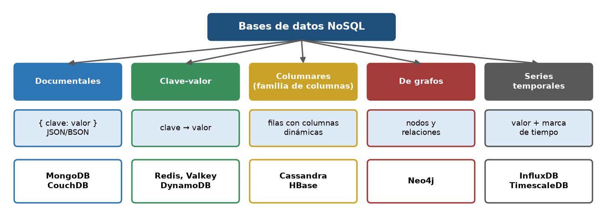
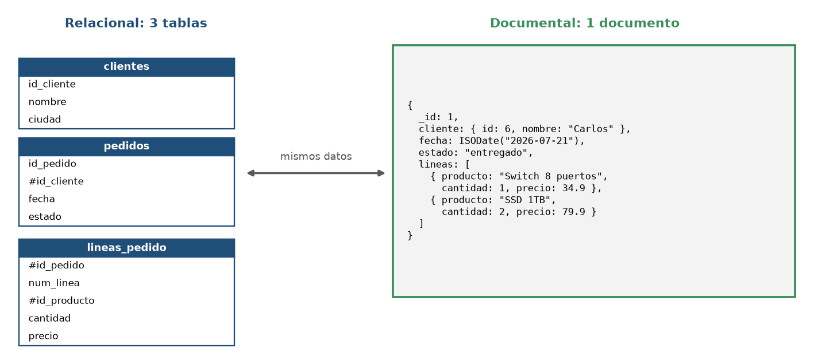
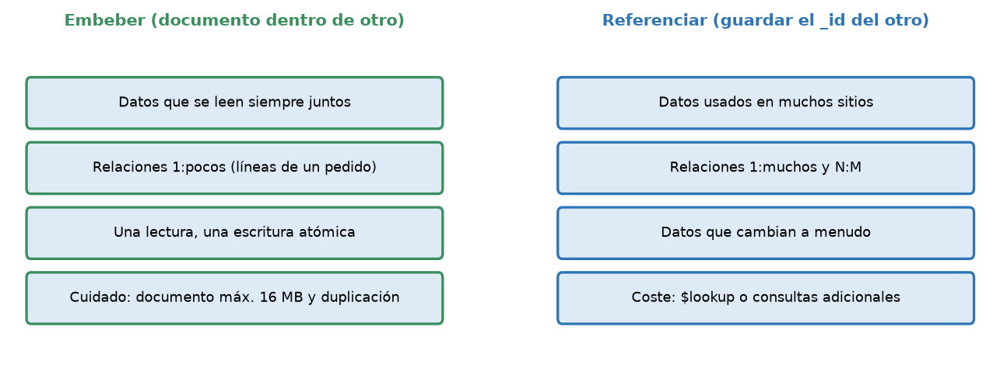
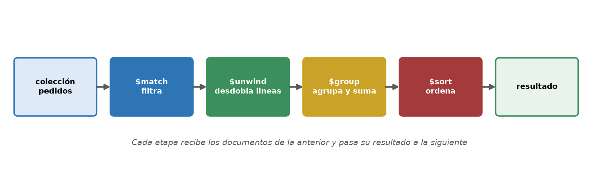
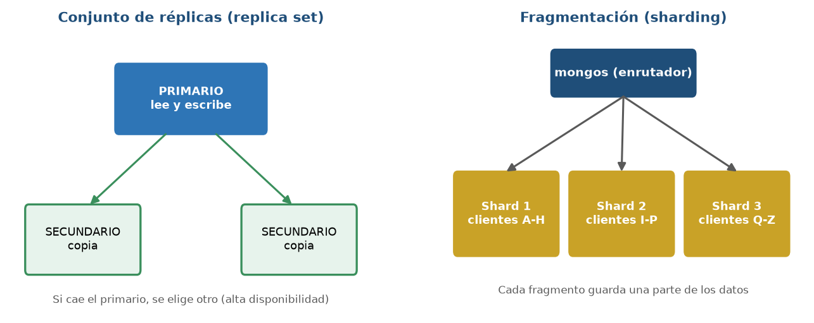

Inicio › UT7
Qué se trabaja
- Caracterización y tipos de bases de datos no relacionales; MongoDB.
- Modelado de documentos (embeber o referenciar), consultas, agregación e índices.
Pruébalo en el laboratorio
Consultas MongoDB (resultados reales)
Colecciones de ejemplo de TiendaTech (productos, clientes y pedidos con las líneas embebidas), ejecutadas en MongoDB 9.0:
db.productos.find({categoria:'Redes'},{_id:0,nombre:1,precio:1}).sort({precio:1}).limit(3)▶ Resultado
[
{ nombre: 'Cable red 5m', precio: 6.5 },
{ nombre: 'Switch 8 puertos', precio: 34.9 },
{ nombre: 'Router WiFi 6', precio: 89 }
]db.pedidos.aggregate([{$unwind:'$lineas'},{$group:{_id:'$lineas.nombre',unidades:{$sum:'$lineas.cantidad'}}},{$sort:{unidades:-1}},{$limit:3}])▶ Resultado
[
{ _id: 'Webcam HD', unidades: 12 },
{ _id: 'Fuente 650W', unidades: 12 },
{ _id: 'Teclado mecánico', unidades: 12 }
]db.pedidos.findOne({},{_id:0,id:1,estado:1,lineas:{$slice:1}})▶ Resultado
{
estado: 'pendiente',
lineas: [
{
num: 1,
producto_id: 18,
nombre: 'Switch 8 puertos',
cantidad: 1,
precio_unitario: 34.9
}
]
}Figuras de la unidad




